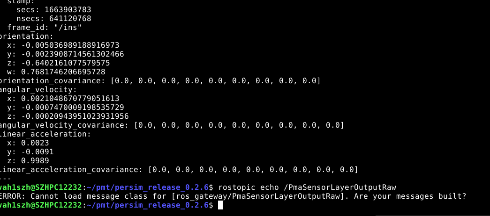

PerSim finding and issue tracking from Per
OPL
|
NO |
Description |
Impact xPer module |
Status |
Reponsible |
Complexity |
Comments |
|
1 |
Sensor frame reply on system time not reaching expected bg: MW not support synchronize aos to bag time, need persim synchronize bag data to system |
localization, tracking, etc |
IN PROGRESS |
Middle |
CNWVIII-14189 - Jira issue doesn't exist or you don't have permission to view it. |
|
|
2 |
LiDAR data replay feature develop bg: lidar in gw is under developing as dependency |
Liper |
IN PROGRESS |
Middle |
|
|
|
3 |
Uss replay issue  |
Fusion |
IN PROGRESS |
High |
23 Sep 2022 from PMT：need add uss channel in conf file |
|
|
4 |
Resource competition bg: Persim and viper deploy together, hard to analyze the interaction |
Any |
OPEN |
|
High |
|
Notes:
Description: known issues or the planned feature to be release from PerSIM, used by Per
Impact XPer module: the list modules from per cannot be tested or has obvious performance limit due to the described problem from PerSIM
Complexity: represents the feeling from perEng to solve the issue based current situation
Responsible: interface or developer from PerSIM